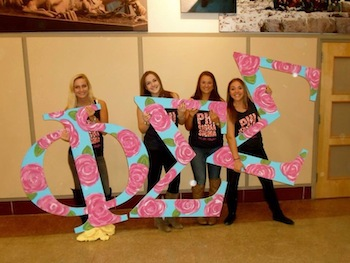

Welcome to my website! My name is Katie and I am currently a junior at Saint Joseph's University in Philadelphia, PA. I am a Communication Studies and Marketing Double Major and anticipate graduating in 2016. My current career goals are to enter into the field of Public Relations or Advertising.
My time here has been anything but boring! From the start of freshman year, I was selected to be the Vice President of Communications and Advertising for the American Marketing Association. Along with my fellow E-board, I led an organization with over one hundred members. Individually, I led a committee of about twenty members. I created traditional and social media campaigns while maintaining the organization's website and social media platforms. I also attending the annual International Collegiate Conference, where my work during the 2013 term was awarded Outstanding Communications. Through this experience, I have learned how to effectively lead many projects.
Also during my freshman year and continuing into my sophomore year, I was a member of the Peer Educators for the Wellness, Alcohol Drug and Education Office. With the other members of this organization, we educated the Saint Joe's community about healthy lifestyle choices/habits and gave informative presentations to multiple organizations on campus. Through this organization, I learned how to actively be a role model for my peers and learned how to make healthy lifestyle choices for myself. Second semester of my sophomore year I was chosen to be a member of the Spring Concert Committee. Together we organized the annual student concert by contacting the act, promoting the event and setting up Hagan Arena the day of the event. This year, I plan on re-applying for the Concert Committee to further my experience in the entertainment industry.
My sophomore year at SJU also included my initiation into the National Society of Collegiate Scholars. This organization involves various community service opportunities as well as the chance to academically lead the Saint Joe's community. Being a member of this organization proves my ability to time manage all of my activities while still maintaining a good grade point average.
At the end of my sophomore year, I joined my sorority, Phi Sigma Sigma. Together with 122 other girls, I became a founding sister of the Iota Rho Chapter here at St. Joe's. We have built this organization from the ground up by writing the constitution, creating traditions and setting up our chapter for the future members.
This year, SJU created an organization called "The Flock" as an outreach group aiming toward those affected by addiction and those interested in being an ally for those affected. The Flock sets up weekly meetings on campus such as Alcoholics Anonymous and Adult Children of Alcoholics. Helping people who are also affected by addiction is something that I am extremely passionate about.
I was also recently selected to be on the Executive Board for Phi Sigma Sigma. I will be holding ther position of PanHellenic Delegate, working with the rest of the Greek Community through other organizations such as Greek Council and PanHellenic Council. Together we will make a better experience for Greek Life on campus!
Look out for more to come in the next year and a half! I am excited to see where my life takes me next.